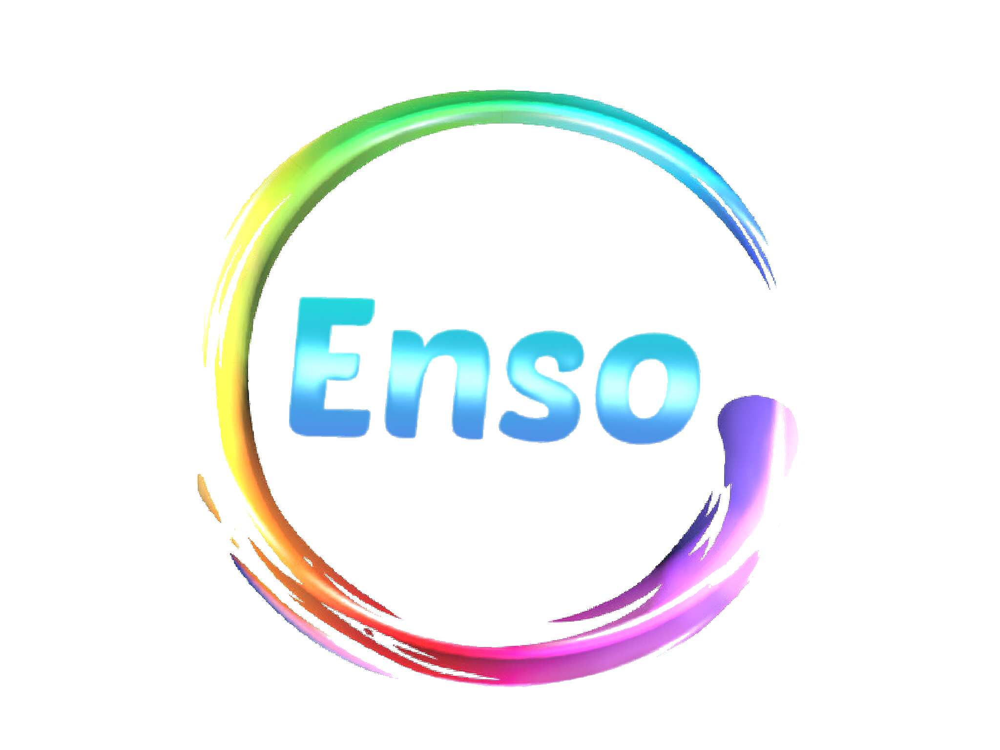
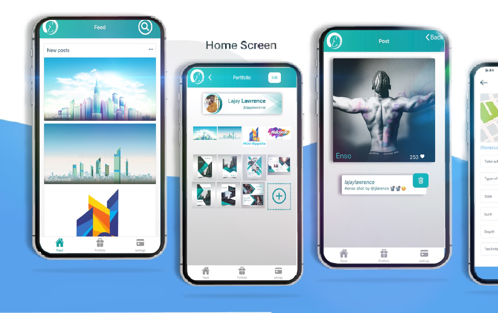

<ion-content [fullscreen]="true">


 
 <div class="home-container2" >


  <div class="home-container1">
  
    <div class="home-toolbar"> About us</div>
  
    <div class="about-text">
      <span>Enso</span> is a mini social media platform that provides services similar to the basic 
      features of
      <span>Instagram</span>. Using Enso, you can build
      a digital portfolio which you can showcase in a social or professional setting. 
      Also checkout my animated website here:<span class="mini-app" ><a class="mini-app" href="https://lajaylawrence.github.io/mini-appolis/mini-appolis/"> Mini-Appolis</a></span><br/>
      <span (click)="goToLogin()" class="log">Enso Login ..</span>

    </div>

    
    
  </div>
  
  
  
  
  
  
 </div>
  
</ion-content>
